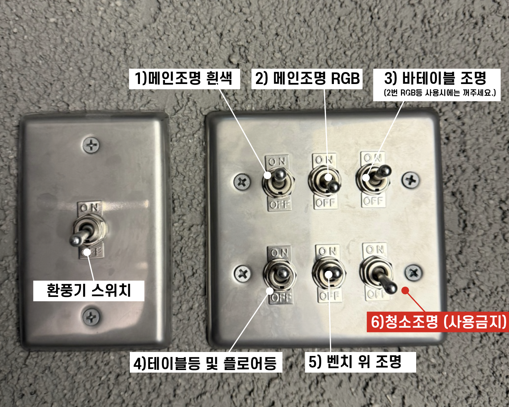
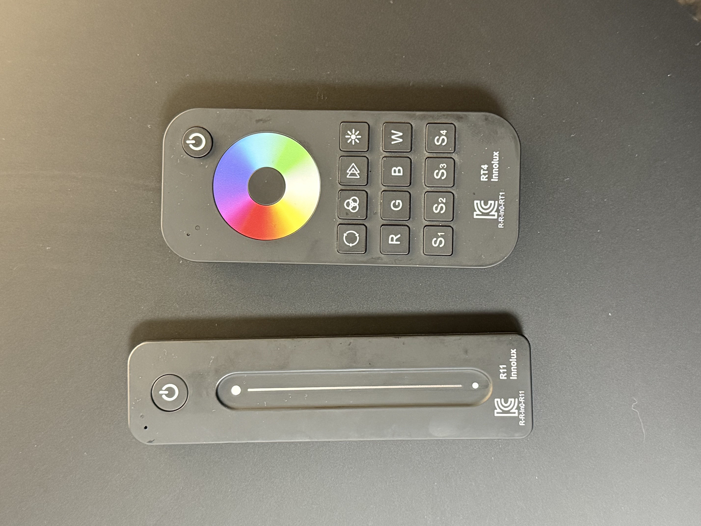
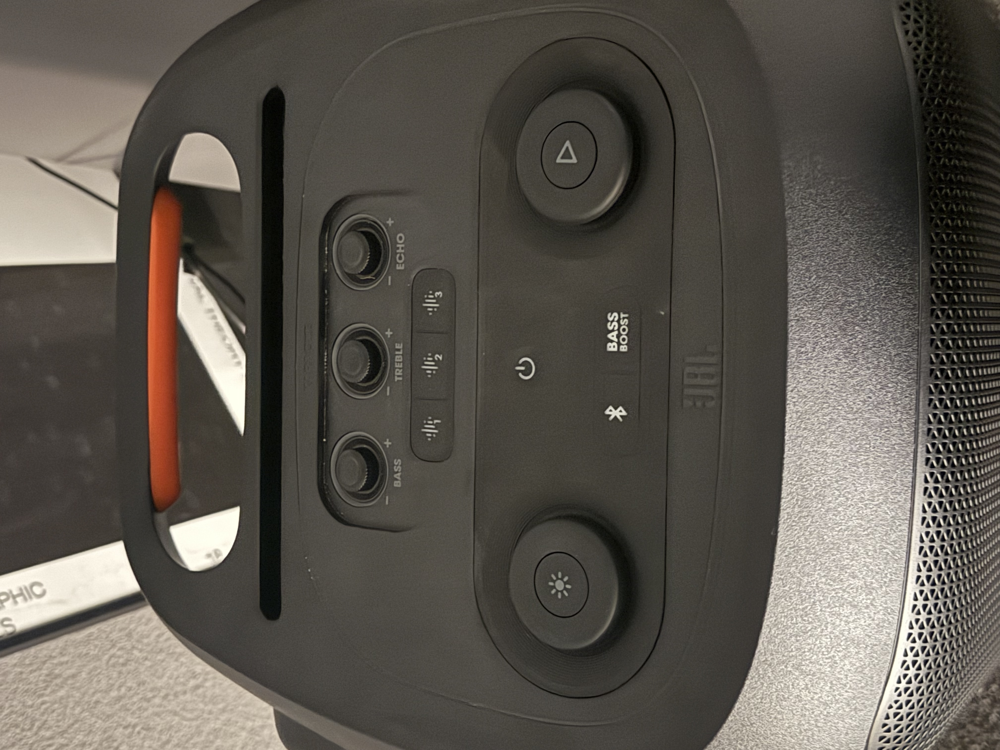
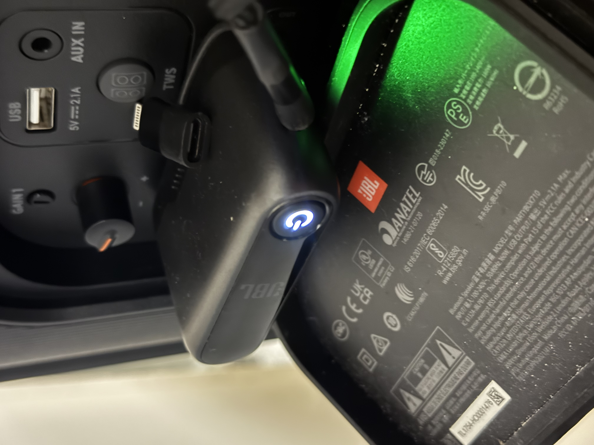
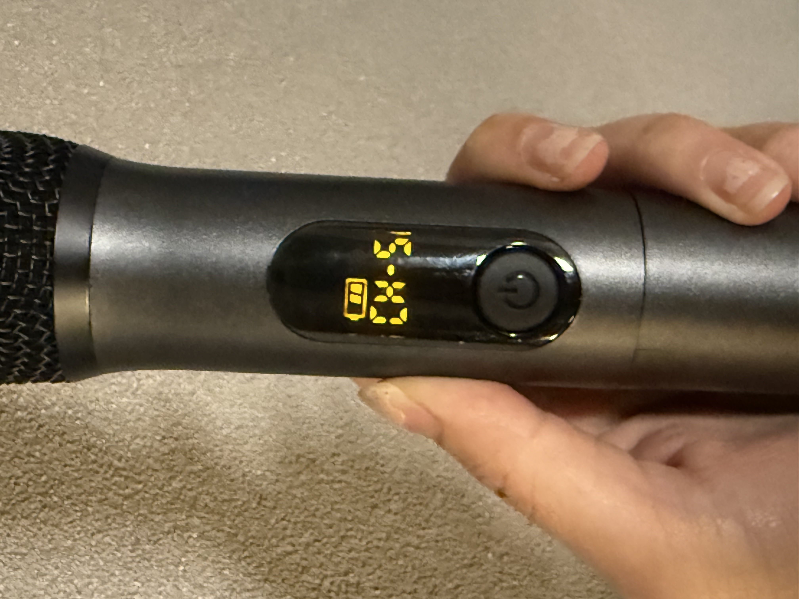

OOFF 시설사용법
조명 사용법
-

지하계단 통해 문을 열고 들어가시면
바로 오른쪽에 사진과 같은 스위치가 있습니다.
마지막 스위치를 제외하고 스위치를 조작하여 점등하시면 됩니다.
- 대형 면조명같은 경우 1번 조명과 2번 조명중 하나를 켜주세요
-

1번 스위치로 주광색 조명을 켠 겅우에는 1번 리모컨으로 조도 조절이 가능합니다
- 2번 스위치로 RGB 조명을 켠 겅우에는 2번 리모컨으로 색상조절이 가능합니다
음향기기기 사용법 - 마이크 연결방법법
-

스피커의 전원을 눌러 켜줍니다
- 스피터의 블루투스 버튼을 누르면 핸드폰과 연결 가능합니다
-

스피커 후면에 사진과 같이 연결되어있는 마이크 무선잭의 전원을 켜줍니다
-

무선 마이크의 전원을 눌러 연결을 확인힙니다다